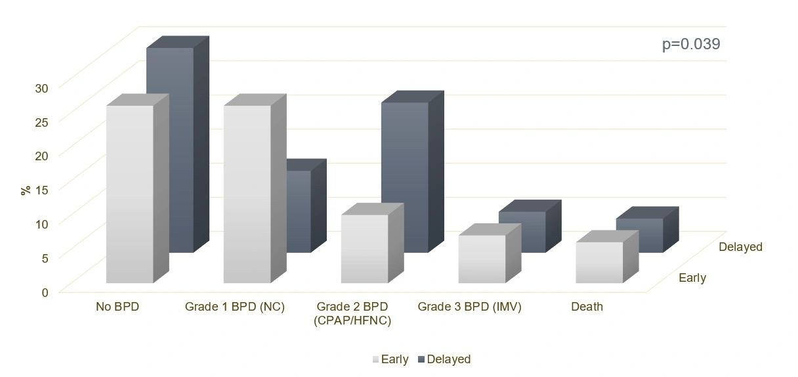

New RCT Analysis Links Early Fortification to Less Severe BPD

In the world of neonatal intensive care, every milliliter of milk and every calorie counts—especially for extremely preterm (EPT) infants born before 28 weeks of gestation. These infants face a host of challenges, including bronchopulmonary dysplasia (BPD), a serious lung condition that can have long-term health consequences. Our new study published this month in Journal of Pediatrics offers encouraging evidence that nutrition during the first two weeks of life might play a bigger role than we thought in shaping respiratory outcomes.
The Question:
Does starting fortified human milk earlier—providing more energy and protein right from the start—reduce the severity of BPD in extremely preterm infants?
The Study Behind the Findings:
This analysis stems from the IMPACT trial, a masked randomized controlled trial (RCT) that originally showed early milk fortification improved growth outcomes in EPT infants. In this secondary analysis, we looked specifically at how the timing of fortification affected BPD severity at 36 weeks postmenstrual age (PMA).
Here’s what we did:
150 infants were randomized to receive fortified milk starting on day 3 (early group) or day 14 (delayed group) after birth. We measured BPD severity using the Jensen criteria, a widely accepted scale for respiratory outcomes in preterm infants. We also analyzed weight trends, daily fluid intake, and nutrient content of breast milk samples to understand how nutrition differed between the groups.
What We Found:
The distribution of BPD severity differed significantly between the two groups—suggesting that early fortification may reduce the risk of more severe respiratory disease (p=0.039). Although the odds of having more severe BPD or death were lower in the early fortification group, the difference did not reach statistical significance in ordinal logistic regression analyses.
Milk analysis confirmed what clinicians hoped: Early fortification led to higher energy and true protein intake during that crucial early window.
Why This Matters:
While the distribution was significantly different and the differences in lower odds weren’t statistically definitive, they trend in the right direction—and in a population as vulnerable as EPT infants, even small gains can be lifesaving. These findings support the growing idea that early nutritional strategies may have long-term effects beyond weight gain alone.
Unlike earlier observational studies that were hampered by confounding factors, this was a well-designed RCT, which makes its findings much more robust. It offers practical insights for NICUs: starting fortification earlier may not only support growth but also help preemies breathe better.
What’s Next?
More studies with larger sample sizes are needed to confirm the link between early fortification and BPD severity. But the implications are clear: early nutrition isn’t just about feeding—it may be about protecting the lungs, too.
Bottom Line:
Early human milk fortification in extremely preterm infants may lead to better lung outcomes and less severe BPD, thanks to improved early energy and protein intake. While more research is needed, these findings highlight nutrition’s potential as a powerful tool in respiratory care for preemies.